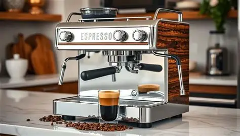
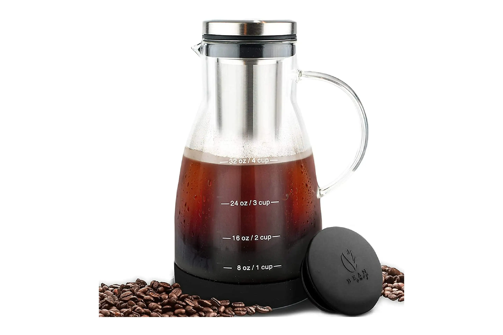
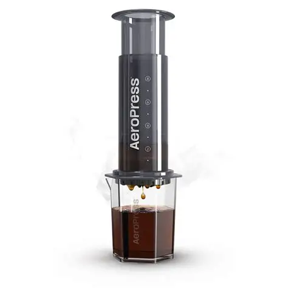

French Press
Coarse-ground coffee steeped in hot water for 4 minutes, then pressed for a full-bodied brew.
Tip: Use water just below boiling (92-96°C).

Pour Over
Medium-fine grounds with slow, circular pouring for a clean and bright cup.
Tip: Pre-wet the filter to remove paper taste.

Espresso
Finely-ground coffee pressed under high pressure for a concentrated flavor shot.
Tip: Use 18-20 grams of coffee for a double shot.

Cold Brew
Steep coarse coffee in cold water for 12–24 hours for smooth, low-acid coffee.
Tip: Dilute 1:1 with water or milk before serving.

AeroPress
Compact method giving espresso-like or filter-style coffee depending on technique.
Tip: Experiment with brewing time for flavor preference.